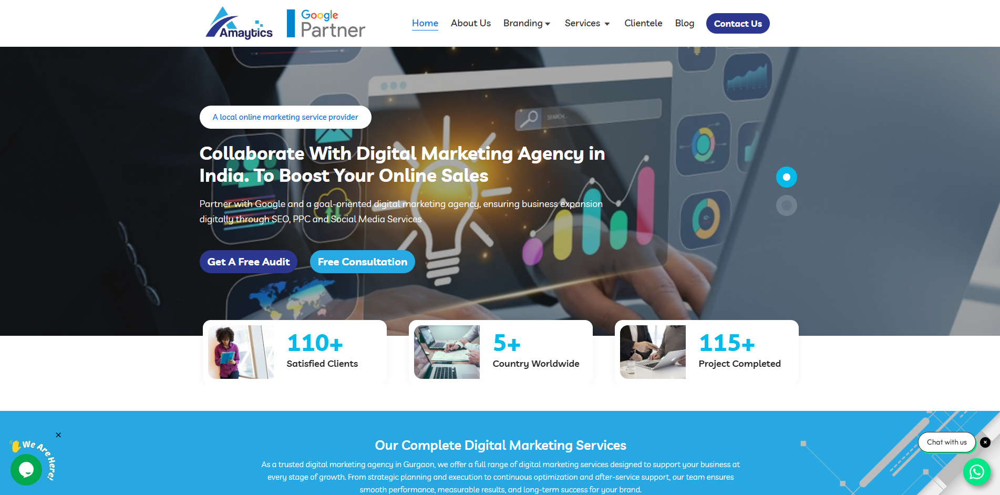

Amaytics Homepage
Global Digital Agency
Amaytics: Full Website & Strategic SEO
Role:
Strategic Content Writer & Web Copywriter
Full Website Content Development for a Global Digital Agency. The challenge was to create a high-authority voice for both small businesses and large enterprises. The solution involved end-to-end copy, SEO integration for high-competition keywords, and crafting a brand narrative that emphasized global trust.